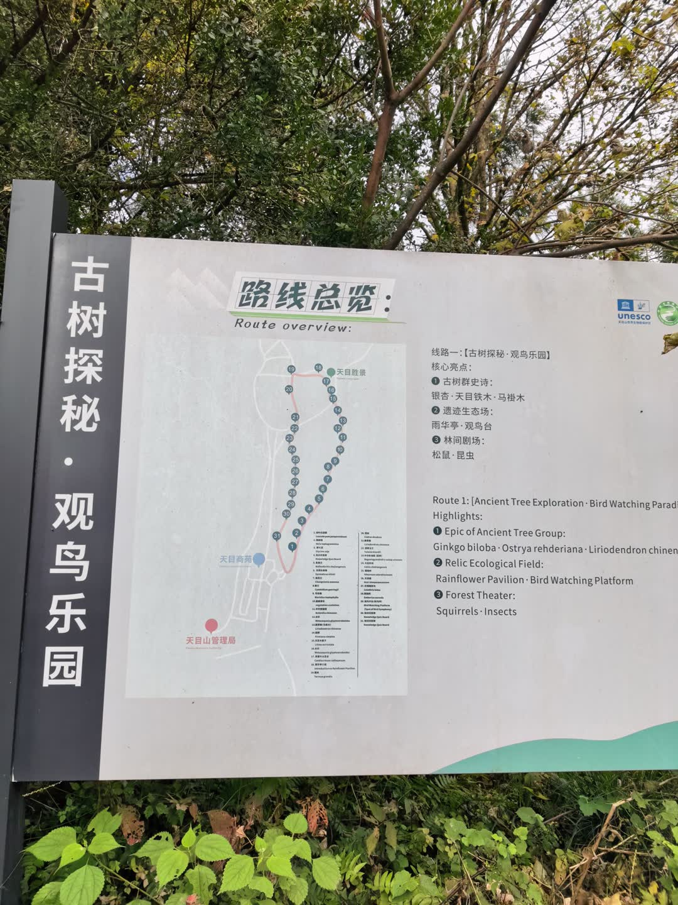
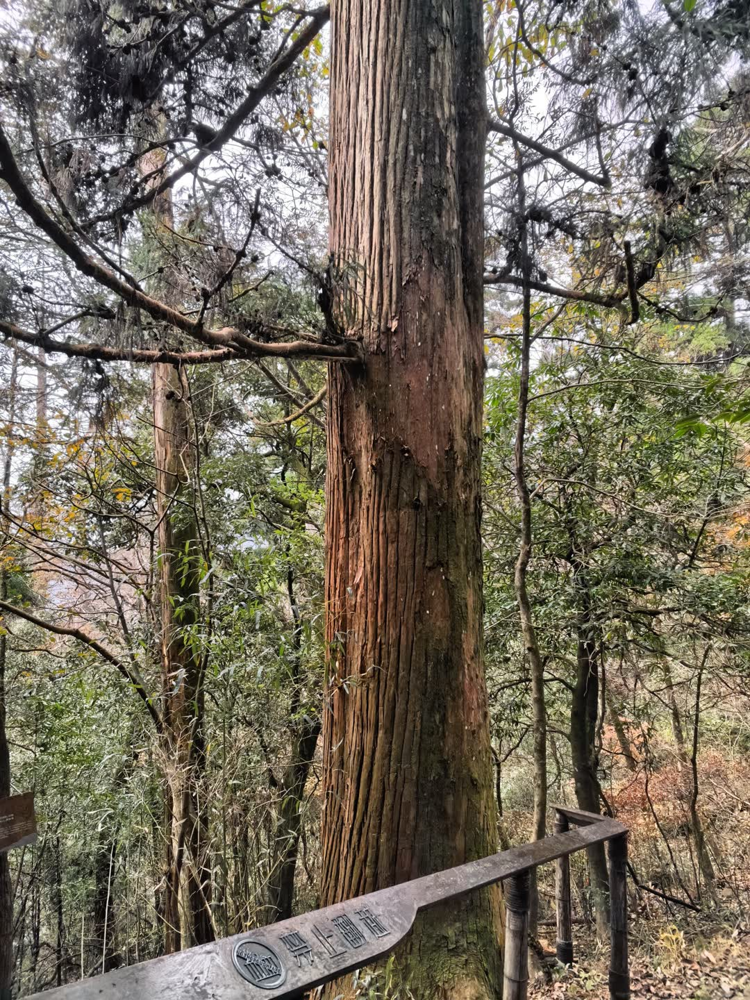
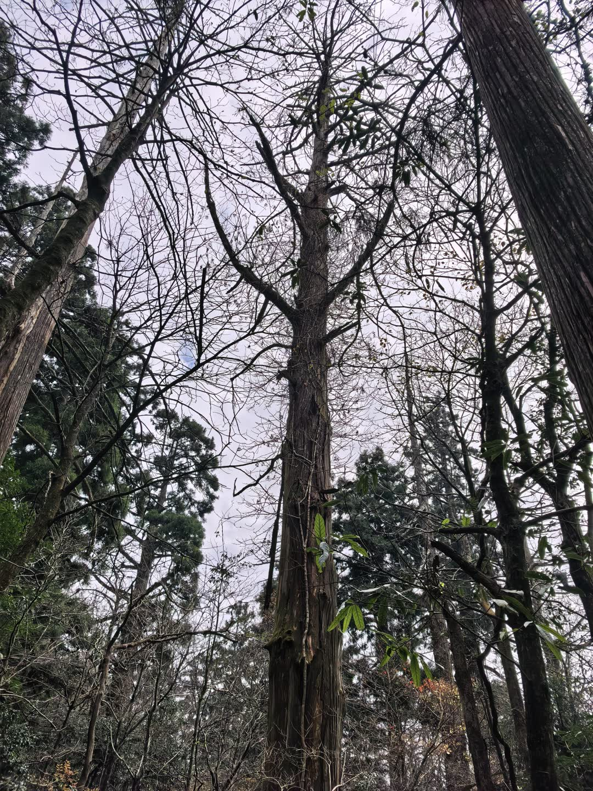
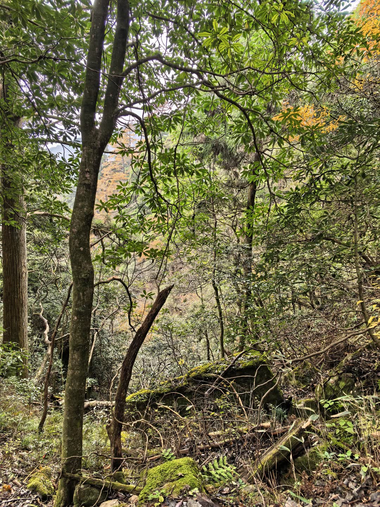
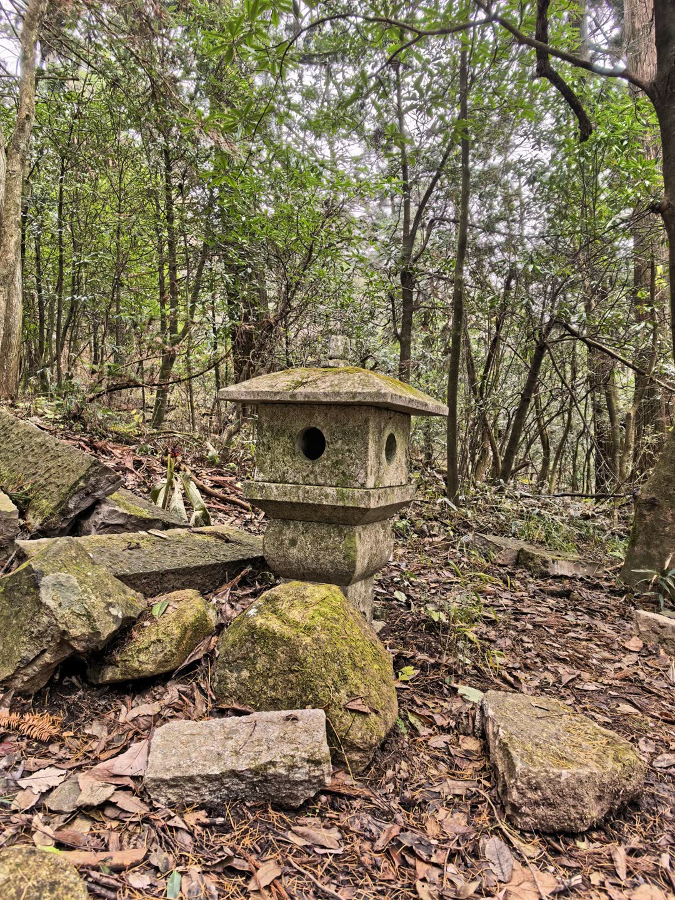
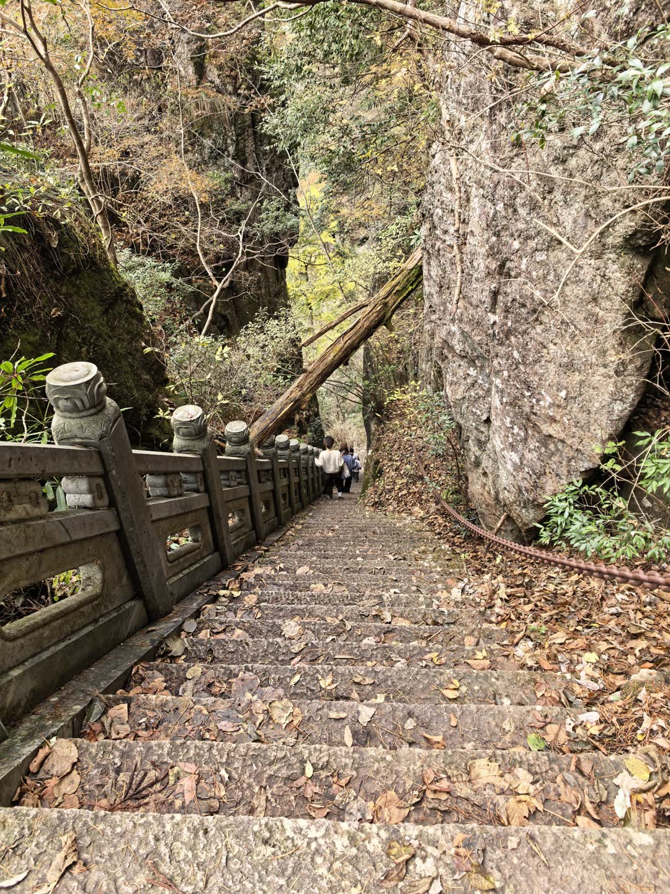
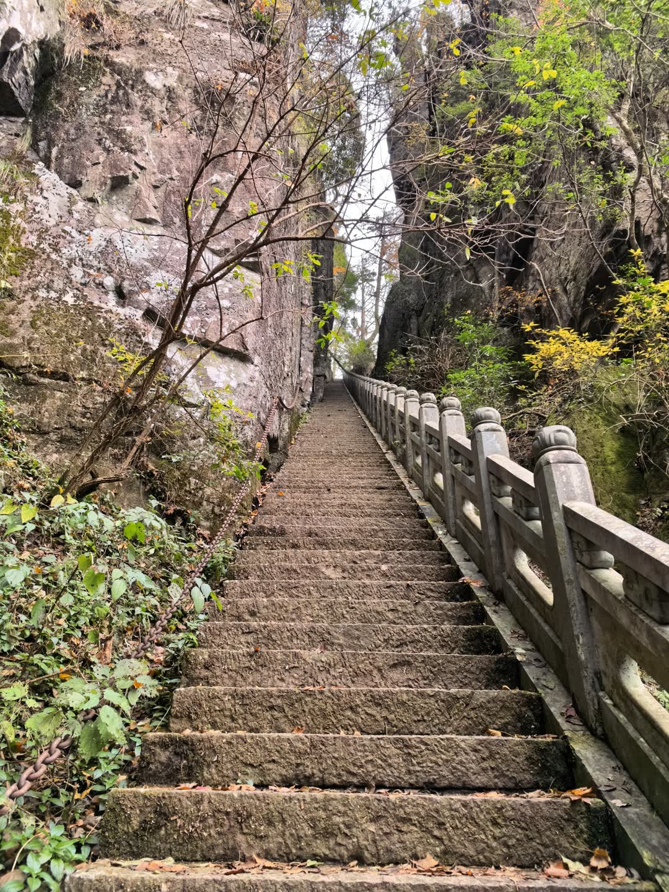
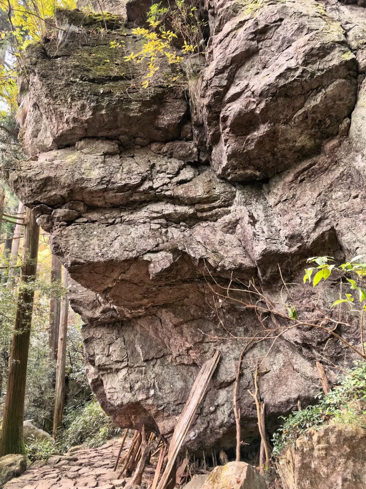
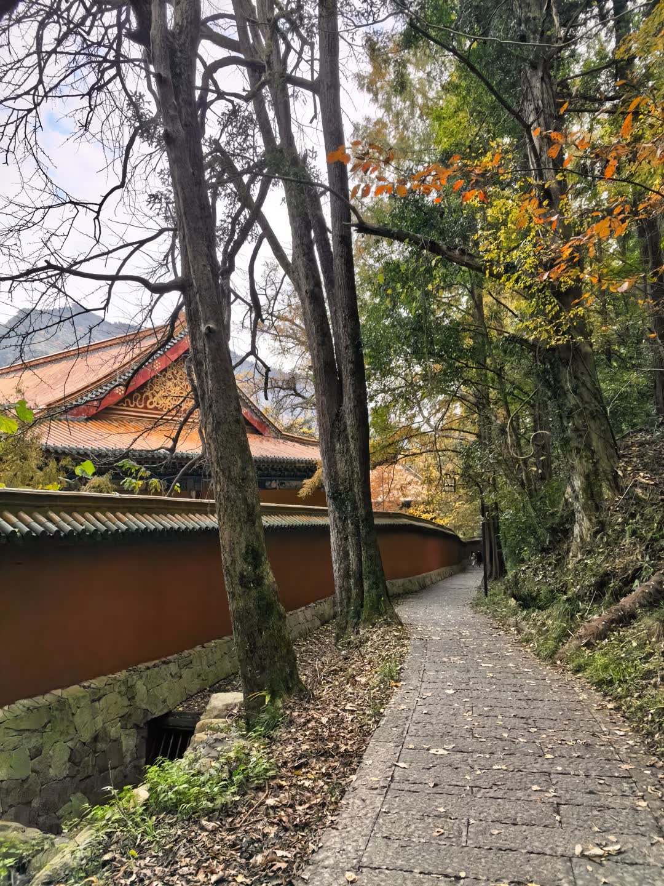

07:30 起床，称体重63.15kg，和11月8日一样，平台期。遛狗、喂狗、多留了一碗水，狗黑豆留在家里。
07:58 从嘉兴出发，开车约三个小时，11点到景区。车停在山下游客中心停车场（小车10元/天），私家车不上山，坐景交车上山，单程20元，约30分钟到龙凤尖停车场。门票提前在网上买好了。

11:20 从龙凤尖出发走大树王环线。认树就两招：笔直的大直干、红褐色树皮一缕缕纵裂的，是柳杉——大树王本体也是柳杉。五世同堂那棵本体是银杏，要在旁边找叶子发黄、扇形叶的那棵，别认错主角。




环线里最难走的是峡谷里的石阶：高低不平，落叶和青苔盖着，踩上去滑。下山时看到几个小孩走这段，全靠大人牵着——这台阶对小短腿是真不友好。


约12:00 走到红蛇洞附近，头晕眼花，坐下歇了十来分钟。早上吃得少、爬了半天，多半是饿的。歇过来之后发现进度比计划快不少——原计划15:30才下山，现在才12点就已经走到环线后半段了。
这条环线不是全程下坡，是下得多、上得少，中间有几段缓上坡混在里面不明显。跟着路牌主线走就没错。

这次实际走法和出发前的计划有一处不一样：上山坐景交车，下山是沿主线步行一路下到山脚的，没坐车——单程票那20块也省了。步行下山费腿，扶稳了慢慢下。
13:21 走到禅源寺红墙，基本算下山成功。再往前一小段平路，就是游客中心停车场。
